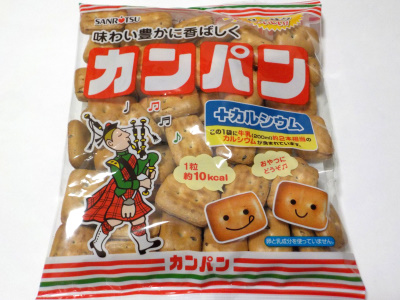

三立製菓のカンパン
更新日 : 2023/12/13

ゴマが入っていて香ばしいカンパンです。砂糖とか塩味はあまりしませんが、ゴマが入ってると味わい深くなりますね。
塩分糖分が少ないのは非常食的にはどうなの？って思いますが、普段おやつで食べるのにはヘルシーでいいかなと思いました。
静岡県浜松市中区中央1-16-11
更新日 : 2023/12/13

ゴマが入っていて香ばしいカンパンです。砂糖とか塩味はあまりしませんが、ゴマが入ってると味わい深くなりますね。
塩分糖分が少ないのは非常食的にはどうなの？って思いますが、普段おやつで食べるのにはヘルシーでいいかなと思いました。